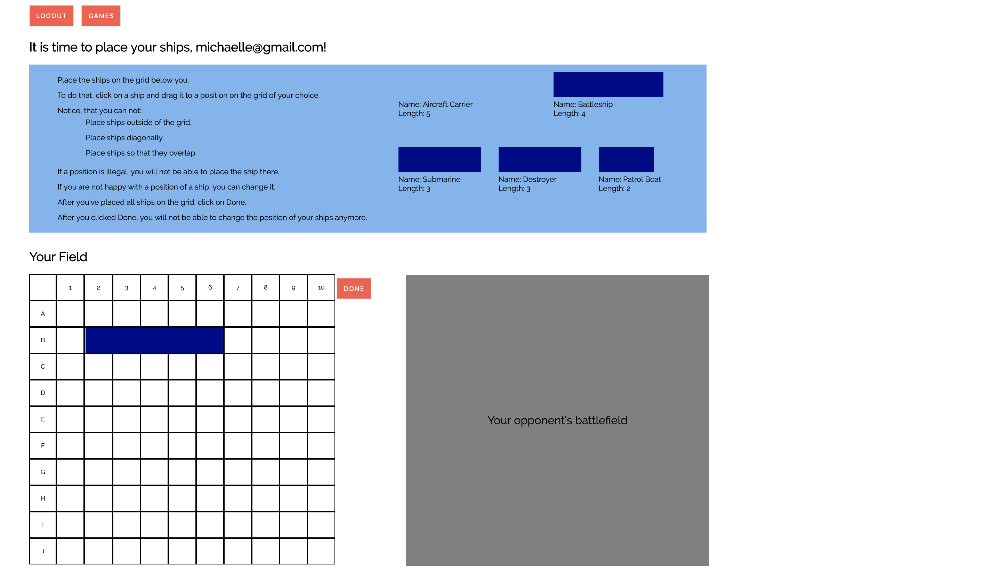
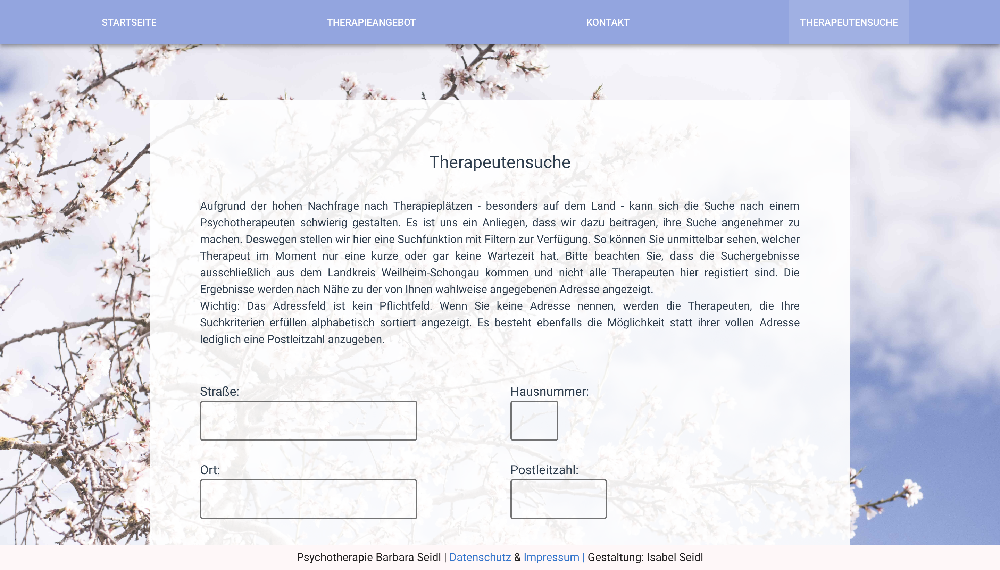
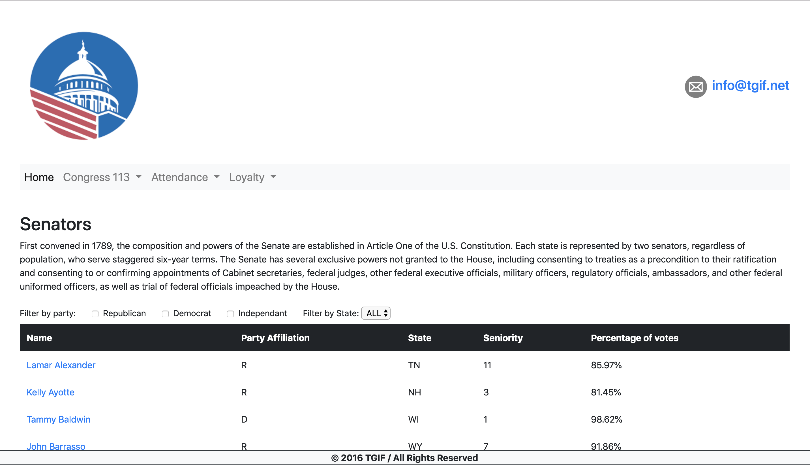
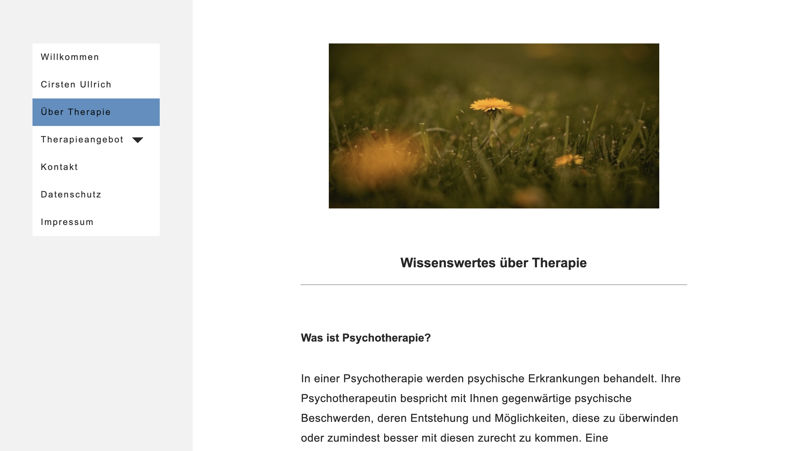
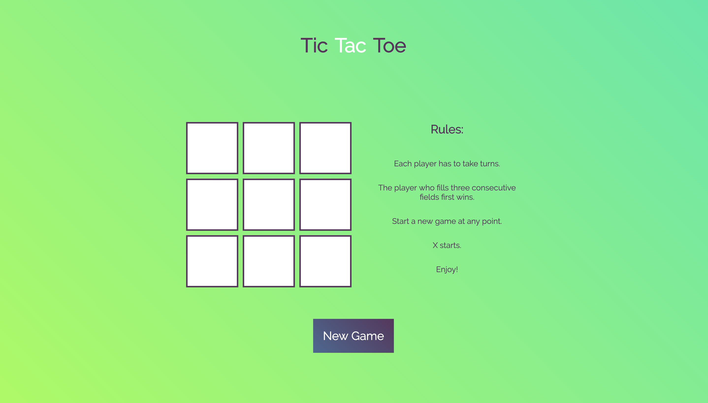

This is a multiplayer version of the famous battleship game. A
user has to sign up to play a game. Security is provided by
Spring. Being logged in a user can either create a new game or
join a game created by a different player. At the beginning of a
game, the user has to place his ships by dragging and dropping
them on a 10×10 grid area. Then the first round of firing salvoes
begins. In each round both players can select five cells where
they suppose the opponent’s ships to be. After every salvo, the
user can see whether or not they scored a hit. The server only
sends the game information (JSON) to the frontend, which the
player is allowed to see. A game is won if one player hits all the
ships of the opponent. A game ends in a tie if both player hit
each others' ships in the same round. After a game ends, each
player gets a score, which is stored in a database. Spring also
manages database access and connectivity. Players can see their
total score and the number of games they lost, won or tied in a
leaderboard table on the homepage. Even if a player knows
JavaScript and tries to circumvent the frontend game logic
mechanisms, forbidden requests are blocked by the server. The UI
was created paying special attention to error prevention and
keeping the user informed about game status and next steps at all
times.
Technologies: Java 8, Gradle, Spring Boot, Javascript, jQuery,
Vue.js

At first glance, this website looks similar to the below shown
website for Barbara Seidl. However, it is a more complex
version of the latter by offering a search feature for therapists
and a contact form built with a third party service called
Email.js. On the page where users can search for therapists they
have the possibility to enter their
address and search for therapists, who are nearby. This is made
possible through the use of The Google Maps Distance Matrix API.
Users can also set filters for the type of therapy they want and
therefore customize the results to their needs. Since Barbara Seidl (my mum)
currently does not want either functionality on her page, you will
not find these on there.
Technologies: Nuxt.js, Vuetify, Google Maps Distance Matrix API

This Single Page Application built with Firebase and the Vue CLI
has user authentication and a chat in real time. I did a more
simple version during my time at coding bootcamp. It was part of
the curriculum. Recently i have rebuild it. I took advantage of
Vuetify's beautiful material design and Vuex - Vue's state
management pattern - to make the app not only look, but also feel
good to use. The client is a soccer club that wants to have an
app, in order for their members to be able to communicate with
each other, see upcoming matches and have access to this
information from their phones. Using the chat requires the user to
be logged in. All other pages can be accessed as a guest. Feel
free to signup and test out the chat. Tip: After opening it in
chrome just switch the device mode to a mobile device of your
choice. I did not test the site for other browsers, so please use
Chrome.
Technologies: Vue CLI, Vuetify, Vuex, Firebase

TGIF stands for Transparency in American Government. The goal of
the site is to make aggregated data about American Congressmen and
Senators available to the public. While the design is simple, the
site offers valuable information through the use of filters and
statistics presented in tables. There are two versions of this on
my github. One done with Vanilla Javascript and the other one with
the help of Vue.js. The site is fully responsive.
Technologies: Vanilla JS/Vue.js, Bootstrap

Cirsten Ullrich is a successful psychotherapist practicing in the city center of munich.
She wanted a simple, clear webpresence for herself, with the possibilty of adding more content in the
future. Together we developed a concept and a design, which i then implemented in the building phase.
Photos and text were provided by the customer.
"Since i feel absolutely clueless about the internet and owning a website,
it was important to me to have someone who patiently explains me everything i need to know and who guides
me
through the whole process.
I felt really taken care of by Isabel. She is incredibly competent, reliable and friendly. I am more than
happy with the end result.
I highly recommend her."
Cirsten Ullrich, E-Mail: praxis@cirstenullrich.de,
Phone: 0151 23328496 (for reference)
Technologies: HTML5, CSS3, JS

Tic Tac Toe is a classic, simple game for two players. I made this game to
practice my JS skills.
Technologies: HTML5, CSS3, JS

This is a website i made for my mum, who runs her own practice as
a psychotherapist. After attending a Vue.js meeting, where i
received an introduction to Nuxt.js, i felt the urge to use Nuxt
in my current project to experience the capabilities of this
framework firsthand. It comes with three different 'rendering
modes'. The option 'Server Side Rendered (Universal)' offers great
advantages over a traditional Vue SPA. Webpages are intitially
rendered on the fly by the server, resulting in a faster load time
and better SEO. Ultimately, 'Universal mode' unites the best from
both worlds. Users still get to experience the snappy UI known
from traditional SPAs. After the inital render by the server, JS
is responsible for loading the content based on the user's
navigation.
Technologien: Nuxt.js, Vuetify

This page could be the frontend of a simple bookstore. It is one
of my earliest projects. Users can search for book titles and can
flip the front cover to receive more information about the book.
There is also a button on the back that opens a slide-show. The
site is fully responsive. It is built with Vue.js and Bootstrap.
Please use Chrome or Firefox to open this page.
Technologies: Vue.js, Bootstrap